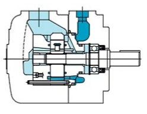
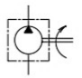

적용 작동유
무기호 : 석유계 작동유
F3 : 인산에스테르계 작동유
F11 : 물·글리콜계 작동유
HYDRAULICS / VANE PUMP / SQP/SQPS 1연 SERIES
제품소개 › 유압 › 펌프 › 정용량형 베인 펌프
Low noise single fixed displacement vane pumps SQP/SQPS series
SQP/SQPS 1연 베인 펌프의 형식, 토출량 범위와 기본 사양을 확인할 수 있습니다.

SINGLE FIXED VANE PUMP
PRODUCT TECHNICAL DATA
제품 외관, 내부 단면 및 유압 심벌을 통해 SQP/SQPS 1연 시리즈의 기본 구성과 적용 특성을 빠르게 확인할 수 있습니다.

PRODUCT TECHNICAL DATA
SQP/SQPS 시리즈는 회로의 최적화와 에너지 효율을 고려한 저소음 정용량형 베인 펌프입니다. SQPS형은 내장 맥동감소 구조로 토출 압력의 맥동 저감에 대응합니다.

MODEL & SPECIFICATION
MODEL CODE
위 번호는 아래 선택 항목과 대응합니다. 실제 형식 선정은 운전 조건에 따라 기술 검토가 필요합니다.
무기호 : 석유계 작동유
F3 : 인산에스테르계 작동유
F11 : 물·글리콜계 작동유
SQP(S)1 – SQP(S)4 시리즈
시리즈별 용량기호를 선택
1 : 사각키 부착 평행축 (SQP(S)1·2)
86 : 사각키 부착 평행축 (SQP(S)3·4)
A : 흡입포트의 반대면
B : 흡입포트로부터 90° 반시계방향
C : 흡입포트와 동일 선상
D : 흡입포트로부터 90° 시계방향
FOOT 취부 시 토출포트 위치
2 : 위쪽(12시 방향)
23 : 오른쪽(3시 방향)
26 : 아래(6시 방향)
29 : 왼쪽(9시 방향)
※ FOOT 취부위치와 흡입포트는 관련 없습니다.
무기호 : 플랜지 취부형
2 : FOOT 취부형
무기호 : 우회전(시계방향)
LH : 좌회전(반시계방향)
SQP(S)1 시리즈의 디자인 번호: 15
SQP(S)2·3·4 시리즈의 형식 예시: 18
STANDARD SPECIFICATION
| 형식 | 용량 기호 | 토출량 L/min | 석유계 사용압력 MPa | 석유계 최고 회전수 min⁻¹ | 물·글리콜계 사용압력 MPa | 물·글리콜계 최고 회전수 min⁻¹ | 인산에스테르계 사용압력 MPa | 인산에스테르계 최고 회전수 min⁻¹ | 최저 회전수 min⁻¹ |
|---|---|---|---|---|---|---|---|---|---|
| SQP(S)1 | 2 | 7.5 | 14 | 1,800 | 14 | 1,200 | 14 | 1,200 | 600 |
| 3 | 10.2 | ||||||||
| 4 | 12.8 | 17.5 | 17.5 | ||||||
| 5 | 16.7 | ||||||||
| 6 | 19.2 | ||||||||
| 7 | 22.9 | ||||||||
| 8 | 26.2 | ||||||||
| 9 | 28.3 | ||||||||
| 11 | 35.0 | ||||||||
| 12 | 37.9 | 16 | 16 | ||||||
| 14 | 44.2 | 14 | 14 | ||||||
| SQP(S)2 | 10 | 32.5 | 17.5 | 1,800 | 17.5 | 1,200 | 14 | 1,200 | 600 |
| 12 | 38.3 | ||||||||
| 14 | 43.3 | ||||||||
| 15 | 46.7 | ||||||||
| 17 | 52.5 | ||||||||
| 19 | 59.2 | ||||||||
| 21 | 65.0 | ||||||||
| SQP(S)3 | 17 | 53.3 | 17.5 | 1,800 | 17.5 | 1,200 | 14 | 1,200 | 600 |
| 21 | 66.7 | ||||||||
| 25 | 79.2 | ||||||||
| 30 | 95.0 | ||||||||
| 32 | 100.0 | ||||||||
| 35 | 109.0 | ||||||||
| 38 | 118.0 | ||||||||
| SQP(S)4 | 30 | 96.0 | 17.5 | 1,800 | 17.5 | 1,200 | 14 | 1,200 | 600 |
| 35 | 109.0 | ||||||||
| 38 | 128.0 | ||||||||
| 42 | 134.0 | ||||||||
| 50 | 156.0 | ||||||||
| 60 | 189.0 |
| 형식 | SQP 플랜지 취부 kg | SQP FOOT 취부 kg | SQPS 플랜지 취부 kg | SQPS FOOT 취부 kg |
|---|---|---|---|---|
| SQP(S)1 | 16.0 | 19.0 | 18.5 | 21.5 |
| SQP(S)2 | 25.0 | 34.5 | 29.5 | 39.0 |
| SQP(S)3 | 35.0 | 44.5 | 43.0 | 52.5 |
| SQP(S)4 | 59.5 | 84.5 | 71.0 | 96.0 |
DOCUMENT ACCESS
자료를 전에 확인해 주세요.